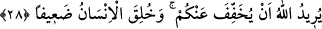

uymak, onlara boyun eğmek demektir. Arzularını şer’-i şerîfin câiz gördüğü ruhsat
verdiği çerçevede yerine getirenler ise şehvetlerine değil, şer’-i şerîfe uymuş olurlar.
Denildi ki mecûsîler, baba bir kız kardeşleri ile erkek kardeşlerinin kızları ve kız
kardeşlerinin kızlarıyla evlenmeyi helal saydıkları için Allah Teâlâ bunlarla evlenmeyi
haram kıldı. O zaman onlar: “Siz de halalarınızla ve teyzelerinizle evlenmeniz haram
olduğu halde hala kızı ve teyze kızıyla evlenmeyi helal sayıyorsunuz. Öyleyse erkek
kardeş ve kız kardeş kızları ile evlenmeyi de helâl sayın!” dediler. Bunun üzerine bu
âyet nâzil oldu. “Büsbütün” helâl saymadan nadiren hataya düşen kimseye göre daha
büyük bir sapıklığa düşmenizi, “yoldan” yani şehvetlere tabi olma ve haramları helâl
sayma konusunda onlara uyarak orta yoldan ve haktan “çıkmanızı” ve kendileri gibi
zinakarlar olmanızı “isterler”.
28- Allah sizden (yükünüzü) hafifletmek ister; çünkü insan zayıf yaratılmıştır.
“Allah sizden” sorumlu olduğunuz zor mükellefiyetleri “hafifletmek istiyor.” Onun
için de hak, hoşgörülü ve kolay bir din olan İslâm’ı size göndermiş, câriyelerle
evlenmeyi helal kılma vb. ruhsatlarla daraldığınız konularda size ruhsatlar tanımıştır.
“Çünkü insan zayıf yaratılmıştır.” Heveslerine karşı koymaktan âciz, heveslerinin
sebep ve kuvvetlerine mukabele etmeğe gücü yetmez olarak yaratılmıştır. Öyle ki,
şehevânî isteklerine uymamaya sabredemez, gücünü kuvvetini tâatlerin meşakkatlerine
katlanmakta kullanamaz.
Kelbî bu âyeti, “Kadınlar konusunda sabredemez” diye tefsir etmiştir. Saîd b.
Müseyyeb ise “Şeytan insanoğlundan ne zaman umudunu kesse ona hemen kadın yolu
ile yaklaşır. Ben seksen yaşında bir ihtiyarım. Gözlerimin biri kör, diğeriyle de zor
görüyorum. Yine de nefsim için en çok korktuğum şey kadınların fitnesidir.” demektedir.
Ebû Hüreyre (r.a.): “Allahım, zinâ ve hırsızlık etmekten sana sığınırım!” diye duâ
edince: “Bu kadar yaşlandığın halde nefsin için zinâ ve hırsızlık etmekten mi
korkuyorsun?” diye sorduklarında: “İblis hayattayken nefsimden nasıl emin olabilirim?”
demiştir.
Hâfız der ki:
Hilebaz feleğin ayak kaydırdığı yerde benim işim ne?
Hilebaz feleğin bahanelerinden kurtulmanın yolu ne?
Âyet iyice incelendiği zaman görülecek olan tasavvufî yorumlar şöyledir: Allah Teâlâ
dört şey isteyerek bu ümmete ihsanda bulunmuştur:
1. Tebyîndir ki, onlara Allah’a giden dosdoğru yolu beyân etmesidir.